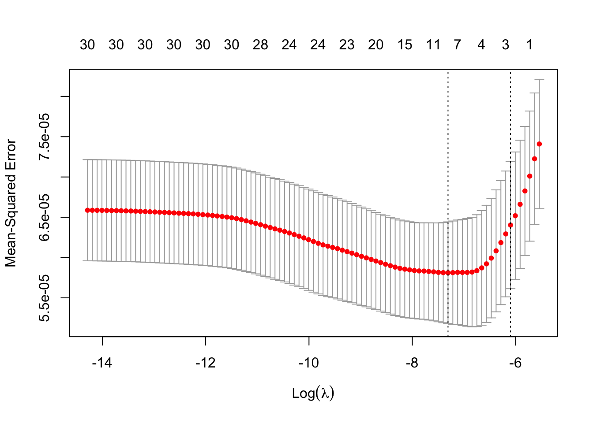
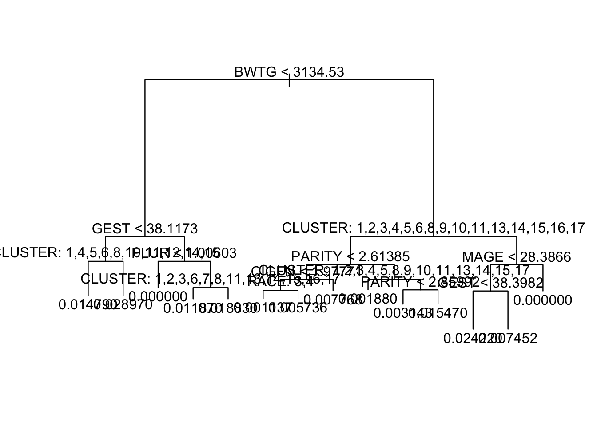
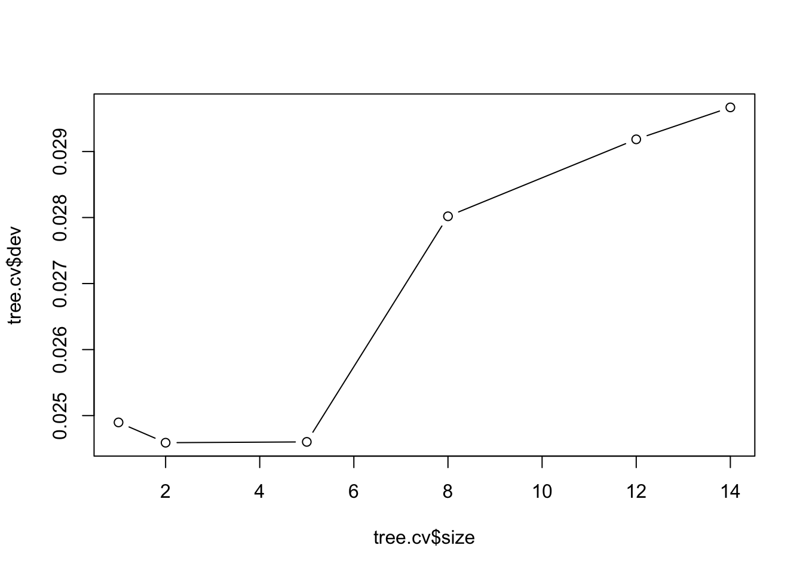
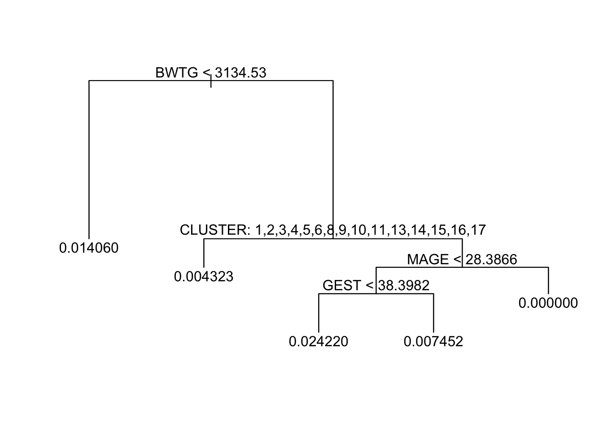
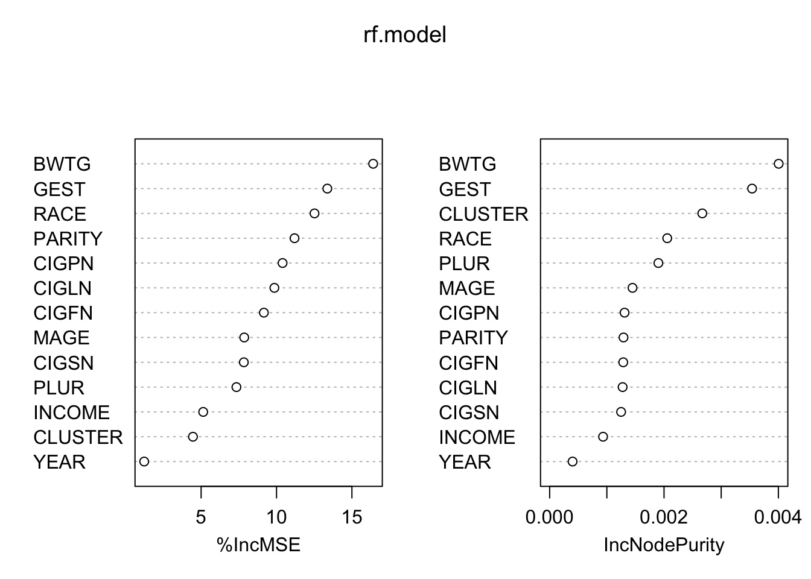
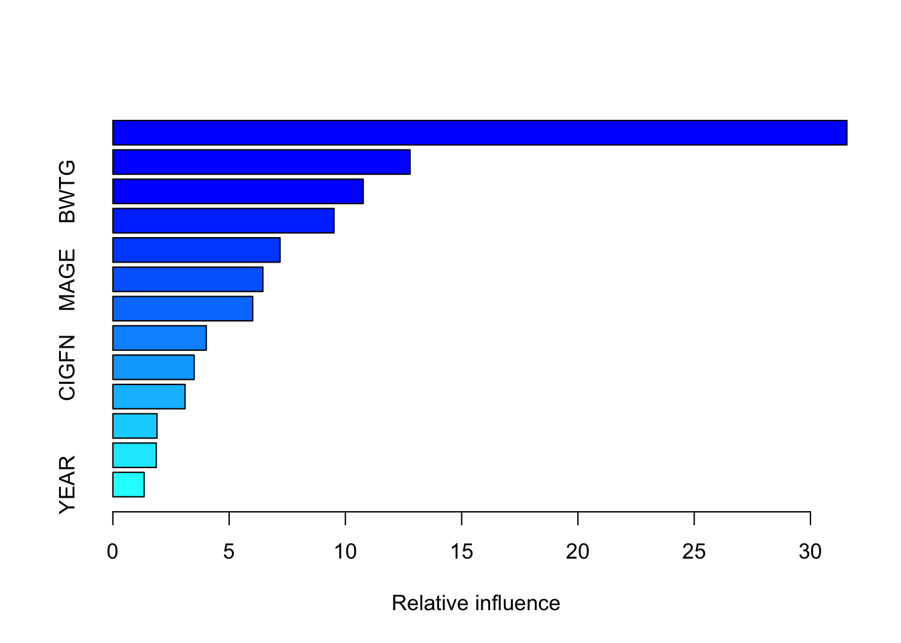
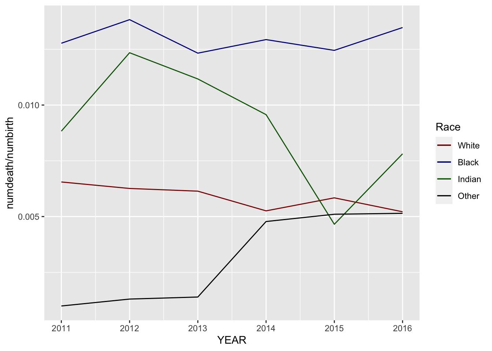
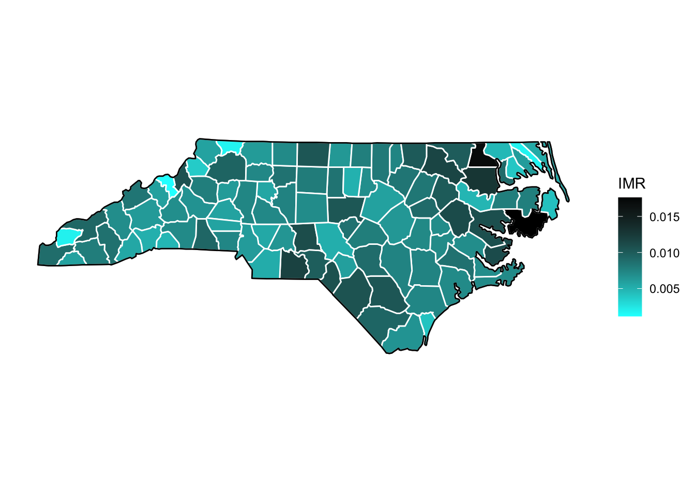

library(ggplot2)
library(tidyverse)
library(urbnmapr)
library(dplyr)
library(ggmap)
library(maps)
library(mapdata)
library(glmnet)Loading the Data and Packages
I’m using Google Maps data here.
Set up the base NC map:
ditch_the_axes <- theme(
axis.text = element_blank(),
axis.line = element_blank(),
axis.ticks = element_blank(),
panel.border = element_blank(),
panel.grid = element_blank(),
axis.title = element_blank()
)
states<-map_data("state")
nc_df<-subset(states,region=="north carolina")
nc_base <- ggplot(data = nc_df, mapping = aes(x = long, y = lat, group = group)) +
coord_fixed(1.3) +
geom_polygon(color = "black", fill = "gray")
counties<-map_data("county")
nc_county<-subset(counties,region=="north carolina")We read the data in.
raw.bd1<-read_csv("data/birth_data.csv")
raw.bd1$Year<-as.integer(raw.bd1$Year)
raw.bd2<-read_csv("data/birth_data2.csv")
br<-read_csv("data/Yr1116Birth.csv")
dr<-read_csv("data/Yr1116Death.csv")
county.conversion<-read_csv("data/County_Codes_Table_1.csv")
county.conversion<-county.conversion[,1:3]
incomes<-read_csv("data/Income_by_Location.csv")
incomes$Geography<-str_sub(incomes$Geography,1,-12)
incomes<-rename(incomes,subregion=`Geography`)
#Resolve YOB vs. YEAR column names.
br<-rename(br, YEAR=YOB)
#Resolve MRACER vs. RACE column names.
br<-rename(br, RACE=MRACER)We massage br so that we can compare the br and dr data, and so that we will be able to make a map later.
## The birth and death tables contain different codings for race, so I have to change that smh. I begin by defining a function "collapse" which translates the birth data race coding to dezath data race coding.
collapse<-function(x){
if(x==1|x==2|x==3)
return(x)
else
return(4)
}
br$RACE<-sapply(br$RACE,collapse)
county.conversion$CORES<-as.double(county.conversion$CORES)
br<-left_join(br,county.conversion[,1:2])
br$COUNTY<-tolower(br$COUNTY)
br<-rename(br, subregion=COUNTY)
simple_incomes<-incomes[incomes$`ID Race`==0&incomes$`ID Year`==2016,c(5,7)]
simple_incomes$subregion<-tolower(simple_incomes$subregion)
br<-left_join(br, simple_incomes)In order to minimze some of the variance associated with the small county data, we form 17 clusters of counties, and we will take in-cluster means of all the data in br.
countycounts<-count(br,CORES)
countyracecounts<-count(br,CORES,RACE)
race1births<-rep(0,100)
for (i in 1:100) {
race1births[i]<- sum(countyracecounts[countyracecounts$CORES==i&countyracecounts$RACE==1,]$n)
}
race2births<-rep(0,100)
for (i in 1:100) {
race1births[i]<- sum(countyracecounts[countyracecounts$CORES==i&countyracecounts$RACE==2,]$n)
}
race3births<-rep(0,100)
for (i in 1:100) {
race1births[i]<- sum(countyracecounts[countyracecounts$CORES==i&countyracecounts$RACE==3,]$n)
}
race4births<-rep(0,100)
for (i in 1:100) {
race1births[i]<- sum(countyracecounts[countyracecounts$CORES==i&countyracecounts$RACE==4,]$n)
}
countycounts<-bind_cols(countycounts,race1births,race2births,race3births,race4births)
countycounts<-rename(countycounts,NUMBIRTH=n,NUM1=...3,NUM2=...4,NUM3=...5,NUM4=...6)
##We try K-means clustering with about 20 clusters. We try to identify clusters with We want population to have the largest effect, so we don't normalize the data. The result is probably that race plays a very small role in the size of the clusters.
set.seed(1)
km.out<-kmeans(countycounts[,2:6],17,nstart=50)
km.out$cluster [1] 4 9 10 12 12 11 8 11 9 14 16 2 16 15 10 17 12 4 17 12 11 10 14 17 3
[26] 6 12 9 4 9 2 1 17 1 15 16 10 10 17 12 6 17 4 17 14 12 14 7 4 9
[51] 16 10 2 15 15 8 9 12 12 13 11 9 14 14 16 11 1 5 10 8 17 11 9 16 11
[76] 3 17 4 14 3 15 2 8 15 9 15 12 12 7 16 17 13 11 11 9 4 15 14 9 11countycounts<-bind_cols(countycounts,CLUSTER=km.out$cluster)
COREStoCLUSTER<-function(x){
if(0<=x&x<=100)
return(km.out$cluster[x])
else
return(NA)
}
clustervals<-sapply(br$CORES,COREStoCLUSTER)
br<-bind_cols(br,CLUSTER=clustervals)
drclustervals<-sapply(dr$CORES,COREStoCLUSTER)
dr<-bind_cols(dr,drclustervals)
dr<-rename(dr,CLUSTER=...6)brdrcounts<-count(br,YEAR,CLUSTER,RACE)
brdrcounts<-rename(brdrcounts,NUMBIRTH=n)
#I noticed, for example, that the original brdrcounts had no entry for (YEAR,CORES,RACE)=(2011,3,3). Based on a superficial check of a few of the missing values, this seems plausible, but I still want to set NUMBIRTH=0 for the missing combinations. Mostly RACE=3 rows are missing, which seems plausible since the Native American population of NC is around 1-2%.
brdrcounts<-complete(brdrcounts,YEAR,CLUSTER,RACE)
brdrcounts<-replace_na(brdrcounts,list(NUMBIRTH=0))
drcounts<-count(dr,YEAR,CLUSTER,RACE)
#Same sort of completion for death counts. There are even more missing combos, since the death numbers overall in a low-population county can be quite small.
drcounts<-complete(drcounts,YEAR,CLUSTER,RACE)
drcounts<-replace_na(drcounts,list(n=0))
brdrcounts<-left_join(brdrcounts,drcounts)
brdrcounts<-rename(brdrcounts,NUMDEATH=n)
##I add the group means for each statistic in br to the birth and death counts.
brdrcounts<-bind_cols(brdrcounts,CIGPN=rep(0,nrow(brdrcounts)),CIGFN=rep(0,nrow(brdrcounts)),CIGSN=rep(0,nrow(brdrcounts)),CIGLN=rep(0,nrow(brdrcounts)),BWTG=rep(0,nrow(brdrcounts)),GEST=rep(0,nrow(brdrcounts)),PLUR=rep(0,nrow(brdrcounts)), MAGE=rep(0,nrow(brdrcounts)),PARITY=rep(0,nrow(brdrcounts)),INCOME=rep(0,nrow(brdrcounts)))
for (i in 2011:2016) {
for(j in 1:17){
for(k in 1:4){
subset<-br[br$YEAR==i&br$CLUSTER==j&br$RACE==k,]
cigpn<-mean(subset$CIGPN)
cigfn<-mean(subset$CIGFN)
cigsn<-mean(subset$CIGSN)
cigln<-mean(subset$CIGLN)
bwtg<-mean(subset$BWTG)
gest<-mean(subset$GEST)
plur<-mean(subset$PLUR)
mage<-mean(subset$MAGE)
parity<-mean(subset$PARITY)
incomes<-mean(subset$`Household Income by Race`)
n<-which(brdrcounts$YEAR==i&brdrcounts$CLUSTER==j&brdrcounts$RACE==k)[[1]]
brdrcounts[n,6]<-cigpn
brdrcounts[n,7]<-cigfn
brdrcounts[n,8]<-cigsn
brdrcounts[n,9]<-cigln
brdrcounts[n,10]<-bwtg
brdrcounts[n,11]<-gest
brdrcounts[n,12]<-plur
brdrcounts[n,13]<-mage
brdrcounts[n,14]<-parity
brdrcounts[n,15]<-incomes
}
}
}
brdrcounts<-replace_na(brdrcounts,list(CIGPN=0,CIGFN=0,CIGSN=0,CIGLN=0,BWTG=0,GEST=0,PLUR=0,MAGE=0,PARITY=0,INCOME=0))
imrates<-brdrcounts$NUMDEATH/brdrcounts$NUMBIRTH
brdrcounts<-bind_cols(brdrcounts,IMR=imrates)
## We chose not to replace NaN IMR with 0.These are the indices in brdrcounts of the CLUSTER/RACE/YEAR combos which have no births:
which(brdrcounts$NUMBIRTH==0)[1] 27 95 163 231 299 367I’ll take that, as better than having many.
Now, we proceed to try different models on the test data. I think a bit of a warning is in order about concluding too much about variable importance, since we expect there to be significant collinearity between some of the predictors.
#brdrcounts$YEAR<-as.factor(brdrcounts$YEAR)
brdrcounts$RACE<-as.factor(brdrcounts$RACE)
brdrcounts$CLUSTER<-as.factor(brdrcounts$CLUSTER)
train.data<-brdrcounts[brdrcounts$YEAR!=2016,]
test.data<-brdrcounts[brdrcounts$YEAR==2016,]
foldsnums<-sample(1:10,nrow(train.data),replace=TRUE)
fits<-list(length=10)
for(i in 1:10){
foldslogical<-foldsnums==i
fits[[i]]<- glm(IMR~.-NUMBIRTH-NUMDEATH,data=train.data,subset=foldslogical,na.action = na.exclude)
}
library(leaps)
regfit<-regsubsets(IMR~.-NUMBIRTH-NUMDEATH,data=train.data,nvmax=35)
val.errors<-rep(NA,30)
test.mat<-model.matrix(IMR~.-NUMBIRTH-NUMDEATH,data=test.data)
for (i in 1:30) {
coefi<-coef(regfit,id=i)
pred<-test.mat[,names(coefi)]%*% coefi
val.errors[i]<-mean((na.omit(test.data$IMR)-pred)^2)
}
##logreg.bycty<-glm(SURVIVED~CORES+YEAR+RACE,data=br,subset=train,family="binomial")The above is a validation-set approach to variable selection. I find that the best model predicts infant-mortality rates taking into account only whether or not the group is African American:
which.min(val.errors)[1] 1coef(regfit,which.min(val.errors))(Intercept) RACE2
0.005308092 0.009012201 subset.error<-val.errors[which.min(val.errors)]
subset.error[1] 0.0002065257Let’s try lasso regression.
x<-model.matrix(IMR~.-NUMBIRTH-NUMDEATH,train.data)[,-1]
y<-na.omit(train.data$IMR)
set.seed(1)
cv.lasso<-cv.glmnet(x,y,alpha=1,family="gaussian")
plot(cv.lasso)
coef(cv.lasso,cv.lasso$lambda.min)31 x 1 sparse Matrix of class "dgCMatrix"
s1
(Intercept) 1.732326e-01
YEAR .
CLUSTER2 .
CLUSTER3 .
CLUSTER4 .
CLUSTER5 .
CLUSTER6 .
CLUSTER7 8.439871e-04
CLUSTER8 .
CLUSTER9 .
CLUSTER10 .
CLUSTER11 -7.764165e-04
CLUSTER12 1.146498e-03
CLUSTER13 .
CLUSTER14 .
CLUSTER15 .
CLUSTER16 .
CLUSTER17 .
RACE2 4.158737e-03
RACE3 .
RACE4 -2.297542e-03
CIGPN .
CIGFN .
CIGSN .
CIGLN .
BWTG -4.663241e-06
GEST -3.926446e-03
PLUR .
MAGE .
PARITY .
INCOME . coef(cv.lasso,cv.lasso$lambda.1se)31 x 1 sparse Matrix of class "dgCMatrix"
s1
(Intercept) 6.808897e-02
YEAR .
CLUSTER2 .
CLUSTER3 .
CLUSTER4 .
CLUSTER5 .
CLUSTER6 .
CLUSTER7 .
CLUSTER8 .
CLUSTER9 .
CLUSTER10 .
CLUSTER11 .
CLUSTER12 .
CLUSTER13 .
CLUSTER14 .
CLUSTER15 .
CLUSTER16 .
CLUSTER17 .
RACE2 3.111985e-03
RACE3 .
RACE4 .
CIGPN .
CIGFN .
CIGSN .
CIGLN .
BWTG -7.565233e-07
GEST -1.529002e-03
PLUR .
MAGE .
PARITY .
INCOME . simple.lasso.model <- glmnet(x, y, alpha = 1, family = "gaussian", lambda = cv.lasso$lambda.1se)
best.lasso.model <- glmnet(x,y,alpha=1,family="gaussian",lambda=cv.lasso$lambda.min)
test.x<-model.matrix(IMR~.-NUMBIRTH-NUMDEATH,test.data)[,-1]
simple.preds<-predict(simple.lasso.model,test.x)
best.preds<-predict(best.lasso.model,test.x)
simple.lasso.error<-mean((simple.preds-na.omit(test.data$IMR))^2)
simple.lasso.error[1] 0.0002038072best.lasso.error<-mean((best.preds-na.omit(test.data$IMR))^2)
best.lasso.error[1] 0.0002161291The simple model, which uses only RACE2 (African-American), birth weight in grams, and gestation period, is better than the more complex one on the test data. Also, it is better than the best subset selected model.
An unpruned tree model does worse than all three:
library(tree)
tree.model<-tree(IMR~.-NUMBIRTH-NUMDEATH,train.data)
summary(tree.model)
Regression tree:
tree(formula = IMR ~ . - NUMBIRTH - NUMDEATH, data = train.data)
Variables actually used in tree construction:
[1] "BWTG" "GEST" "CLUSTER" "PLUR" "PARITY" "CIGFN" "RACE"
[8] "MAGE"
Number of terminal nodes: 14
Residual mean deviance: 3.229e-05 = 0.01036 / 321
Distribution of residuals:
Min. 1st Qu. Median Mean 3rd Qu. Max.
-0.0242200 -0.0018800 -0.0005768 0.0000000 0.0016300 0.0265900 plot(tree.model)
text(tree.model,pretty=0)
tree.preds<-predict(tree.model,na.omit(test.data))
tree.error<-mean((na.omit(tree.preds)-na.omit(test.data$IMR))^2)
tree.error[1] 0.0002433887Let’s do some tree pruning. The following shows that the minimum deviance is obtained via a tree with 5 nodes. The pruning improves the test MSE a bit, but it still doesn’t beat the lasso.
set.seed(2)
tree.cv<-cv.tree(tree.model)
plot(tree.cv$size,tree.cv$dev,type="b")
prune.tree.model<-prune.tree(tree.model,best=5)
plot(prune.tree.model)
text(prune.tree.model,pretty=0)
prune.tree.preds<-predict(prune.tree.model,na.omit(test.data))
prune.error<-mean((na.omit(prune.tree.preds)-na.omit(test.data$IMR))^2)
prune.error[1] 0.0002200646Let’s try random forests. These don’t provide a dramatic improvement over the single tree. Continue to confirm that RACE, GEST, and BWTG are biggest predictors.
library(randomForest)
set.seed(12)
rf.model<-randomForest(IMR~.-NUMBIRTH-NUMDEATH,na.omit(train.data), importance=TRUE)
rf.model
Call:
randomForest(formula = IMR ~ . - NUMBIRTH - NUMDEATH, data = na.omit(train.data), importance = TRUE)
Type of random forest: regression
Number of trees: 500
No. of variables tried at each split: 4
Mean of squared residuals: 5.982042e-05
% Var explained: 18.83rf.preds<-predict(rf.model,newdata=na.omit(test.data))
rf.error<-mean((rf.preds-na.omit(test.data$IMR))^2)
rf.error[1] 0.0002202987varImpPlot(rf.model)
Have to try boosting:
library(gbm)
set.seed(15)
boost.model<-gbm(IMR~.-NUMBIRTH-NUMDEATH,data=na.omit(train.data),distribution="gaussian",n.trees=5000,interaction.depth=4)
summary(boost.model)
var rel.inf
CLUSTER CLUSTER 31.569196
GEST GEST 12.781752
BWTG BWTG 10.765729
PLUR PLUR 9.510822
RACE RACE 7.189561
MAGE MAGE 6.451966
PARITY PARITY 6.013129
CIGPN CIGPN 4.016546
CIGFN CIGFN 3.494723
INCOME INCOME 3.101411
CIGSN CIGSN 1.897428
CIGLN CIGLN 1.866473
YEAR YEAR 1.341264boost.preds<-predict(boost.model,newdata=na.omit(test.data))
boost.error<-mean((boost.preds-na.omit(test.data$IMR))^2)
boost.error[1] 0.0002398635Now, we summarize our results. As a whole, the regularized linear methods worked the best. Of the trees, the best method was the pruned tree.
mean.error<-mean(na.omit(test.data$IMR)-mean(na.omit(train.data$IMR)))^2
test.error.data<-data.frame(Method=c("No Dependence on Predictors","Best Subset Linear Model","Simple Lasso","Lowest MSE Lasso","Tree","Pruned Tree","Random Forests","Boosting"),`Test Error`=c(mean.error,subset.error,simple.lasso.error,best.lasso.error,tree.error,prune.error,rf.error,boost.error))
test.error.data Method Test.Error
1 No Dependence on Predictors 1.541823e-06
2 Best Subset Linear Model 2.065257e-04
3 Simple Lasso 2.038072e-04
4 Lowest MSE Lasso 2.161291e-04
5 Tree 2.433887e-04
6 Pruned Tree 2.200646e-04
7 Random Forests 2.202987e-04
8 Boosting 2.398635e-04br.dr.race.year<-count(br,RACE,YEAR)
br.dr.race.year<-rename(br.dr.race.year,numbirth=n)
br.dr.race.year<-left_join(br.dr.race.year, count(dr,RACE,YEAR))
br.dr.race.year<-rename(br.dr.race.year,numdeath=n)
data.plot<-ggplot() +
geom_line(aes(x=YEAR, y = numdeath/numbirth,colour = "White"), data=br.dr.race.year[br.dr.race.year$RACE==1,], )+
geom_line(aes(x=YEAR, y = numdeath/numbirth,colour = "Black"), data=br.dr.race.year[br.dr.race.year$RACE==2,], )+
geom_line(aes(x=YEAR, y = numdeath/numbirth,colour = "Indian"), data=br.dr.race.year[br.dr.race.year$RACE==3,], )+
geom_line(aes(x=YEAR, y = numdeath/numbirth,colour = "Other"), data=br.dr.race.year[br.dr.race.year$RACE==4,], )+
scale_color_manual(name = "Race", values = c("White" = "darkred", "Black" = "darkblue","Indian"="darkgreen","Other"="black"))
data.plot
Going to try to make a map of North Carolina, and to see the county FIPs.
br.dr.county<-count(br,subregion)
br.dr.county<-rename(br.dr.county,numbirth=n)
dr.county<-count(dr,CORES)
dr.county<-left_join(dr.county,county.conversion[,1:2])
dr.county<-rename(dr.county,subregion=COUNTY)
dr.county<-rename(dr.county,numdeath=n)
dr.county$subregion<-tolower(dr.county$subregion)
br.dr.county<-left_join(br.dr.county,dr.county)
imr<-br.dr.county$numdeath/br.dr.county$numbirth
br.dr.county<-bind_cols(br.dr.county,IMR=imr)
nccodr<-inner_join(nc_county,br.dr.county,by="subregion")
drmap <- nc_base +
geom_polygon(data = nccodr, aes(fill = IMR), color = "white") +
geom_polygon(color = "black", fill = NA) +
theme_bw() +
ditch_the_axes+
scale_fill_gradient(
low = "#00FFFF",
high = "#000000",
space = "Lab",
na.value = "grey50",
guide = "colourbar",
aesthetics = "fill"
)
drmap